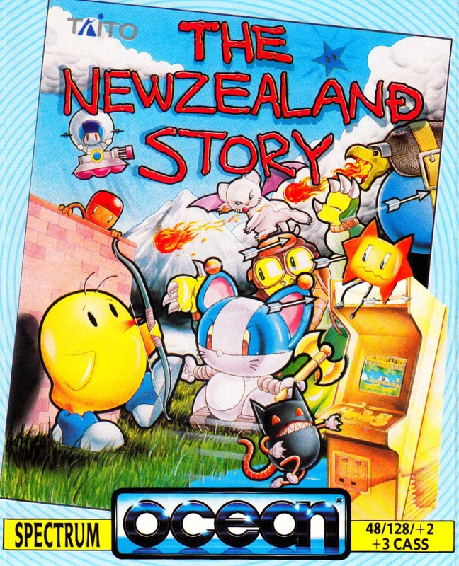
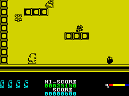

The New Zealand Story


{kind=link}

| Publisher: | Ocean |
| Price: | £8.99/£12.99 |
| Year: | 1989 |
| Source: | CRASH, Issue 68 |

Some people will do anything to get a decent meal, and walruses from down under are certainly among them. Take Wally the Blue Walrus: he’s out for lunch and looking for afters as well. Passing by the zoo he spies 21 kuddly, kute kiwis. Realising they’re on the menu, the sickeningly cute Kiwis decide on a plan of action — leg it!!! But alas, Wally scoops them up and takes them back to his frozen apartment far away. Aw!
Now this would be the end of story if one kiwi, Tiki, hadn’t escaped from Wally’s clutches. A kiwi isn’t too hot when it comes to unarmed combat, but as everyone knows, they’re pretty good archers, and so with beak, bow and arrow, Tiki vows revenge and sets off to rescue his mates.

Wally’s many followers are a wild and crazy bunch with wild and crazy habits: stars which multiply by showing their tonsils (ugh!), bears floating around on hover pods, snails with missiles under their shells, penguins on geese, bats on balloons. Strange things are happening here, but to even the odds Tiki can arm up with bombs, lasers, fireballs, even steal a spaceship and wreak havoc aplenty.
Wally’s minions aren’t the only trouble around though. Spikes can do more than ruffle Tiki’s feathers, running out of oxygen when scuba diving isn’t nice, and neither is getting a prod from a horned devil for time wasting. Even the level itself can be a maze, but if he follows the arrows Tiki should reach one of 20 mates. Alternatively, there are warps to find and jump into — who knows where Tiki will go?
Even with all that firepower, Tiki’s really in it deep when he meets up with the Guardians of each region at the end of every fourth level. Frozen whales and a mega-octopus are just two of the delightful souls wanting to meet Tiki, along with Wally himself, waiting in his balloon on the final ice cool level. Make sure you pack your winter woollies, Tiki!!
Sure enough, Ocean have come up with another surefire hit. The conversion of New Zealand Story is top-notch, with accurate character graphics, plenty of sound and masses of addictive playability. There’s only one snag, and that’s the multi-load wich is a tad awkward on the cassette version — so if you have a plus 3, you’re recommended to buy the disk version. But, whatever you do, don’t be put off by the muiti-load. Once you’re into the game, you’ll forget all about it as you’re swamped in the cutest, [most] addictive game around!
RICHARD — 90%
This cute game has the appealing characters and catchy jingles of Bubble Bobble, with the platform and general looks of something like Super Mario Bros. A recipe for total addictiveness, I think. All the sprites are excellent with great animation, and the different ways Tiki Kiwi can get about (balloon, under water snorkle, etc) add even more playability. There are a variety of mean creatures to be avoided, like malicious rabbits and blood sucking bats, plus different weapons to collect. The New Zealand Story is an arcade conversion masterpiece, get out there and give Wally Walrus one from me!
NICK — 91%
RATING
Super conversion of a very appealing, playable and addictive coin-op
| Presentation: | 85% |
| Graphics: | 91% |
| Sound: | 90% |
| Playability: | 92% |
| Addictivity: | 91% |
| Overall: | 91% |